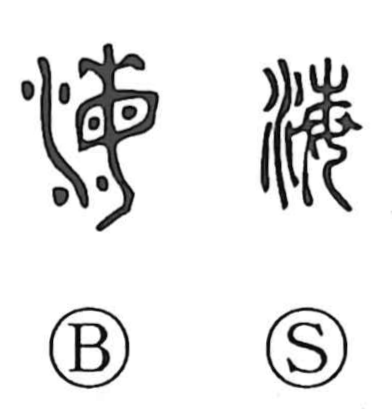

海

Uncategorized
Kun: umi | On: kai
sea ・ ocean
Explanation
A phono-semantic compound: the water element signals the realm of water, while the phonetic 毎 supplies the sound (kai), as seen also in kai of 悔 (regret) and 晦 (dark). In its early form 毎 depicts a woman with an abundance of hair ornaments, an image of oppressive weight upon the head, suggesting a gloomy, overcast mood. Joined with water, the character came to denote the sea—not only as a body of water, but as the dim, unknown expanse beyond the familiar world. Hence in early Chinese usage, 四海 did not literally mean seas in the four directions, but the peripheral, primitive lands encircling 中華, with the sea standing as a symbol of that shadowy outside world.